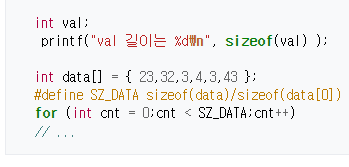

변수형
소개
C 프로그래밍 언어에서 변수는 숫자의 표현에 관련해서 정수형과 실수형이 있다. 이것의 처리는 마이크로프로세서의 ALU와 연관되어 처리 한다.
그리고 자료가 있는 위치값인 메모리 주소값으로 처리하는 포인터 변수가 있다. 이것은 CPU의 메모리 체계와 관련되어 있어 CPU 의존적이다.
그리고 관련된 정보 끼리 묶어 처리하는 struct 구조체 변수가 있다.
정수형의 표현은 char, int로 선언을 한다. char는 8비트로 규정되어 있어 변수의 범위가 결정되지만 int는 CPU와 OS에 의존적이라 변수의
크기를 조정하는 short와 long을 사용한다. 그리고 음수와 양수를 규정하기 위해 signed와 unsigned가 있다. unsigned을 이용하여 양수 정수 만을
취급할 수 있다.
C언어 정수형 변수
C/C++에서 정수형 변수는 정수를 처리하기 위한 변수이다. 정수형 변수를 마이크로프로세서가 처리할 때, 부호와 숫자범위를 결정해야 한다. C/C++로 작성 된 코드는 결국 해당 마이크로프로세서의 기계어 코드로 변환하는데, 마이크로프로세서의 숫자체계(ALU 등 이용)를 사용하기 때문이다. 숫자 범위는 2진수의 몇비트로 처리할 것인가를 결정 해야 한다. 이것은 곧 정수 처리 범위를 결정된다. 마이크로프로세서 내에서 레지스터와 ALU의 비트수가 결정 되었기 때문이다. 숫자 범위는 char, int, short, long을 사용해 변수선언을 하면 된다. 부호는 unsigned을 이용한다. 음수와 양수를 표현하기 위해서는 signed과 unsigned를 사용한다. 음수를 사용할 경우 보통 signed를 생략 한다. int나 char 만을 선언하면 양수와 음수를 같이 사용한다. 양수 만을 사용하려면 unsigned 붙이면 된다. CPU에서 음수는 2진수 체계중에 논리 공학의 2의보수를 사용한다. unsigned를 사용할 경우는 정해진 비트 수 내에서 이진수와 같다. 그러나 음수를 사용할 경우, 양수와 음수는 2의 보수 체계를 사용하여 숫자를 배치 한다. 이것은 연산자로 코딩 될 때 수월하게 숫자를 표현하거나 계산할 수 있기 때문이다. 정수 연산은 CPU 내의 ALU에서 처리 한다. 4칙연산, 논리연산, 비트 쉬프트 등의 연산이 가능하다. 많은 CPU의 경우 부동소수점 연산(FPU) 모듈이 없지만, 정수형 연산은 모든 CPU가 가능하다. 정수는 정수형 ALU을 사용하여 연산한다. 경우에 따라 저속의 8비트 CPU는 나누기 기계어 코드가 없지만, 현재의 CPU 들은 거의 모두 4칙연산을 할 수 있다. 보통의 CPU ALU는 정수형의 나누기의 연산 시, 나누기 기계어 코드가 실행되고 몫과 나머지로 분리하여 레지스터에 저장함으로써 결과를 얻는다.
1. 정수형 변수의 종류와 숫자 처리 능력
1.1 비트별 종류
int의 경우, 대부분의 8비트 CPU는 16비트를 사용한다. 32비트의 CPU의 경우 32비트를 그리고 64비트의 경우 64비트를 사용한다. 따라서 이것은 어떤 OS냐와 컴파일러가 어떤 비트까지 가능한 가에 따라 결정된다. 따라서 이 int 형의 경우 길이를 측정할 때는 sizeof 연산자를 사용하는 것이 좋다.
int와 결합한 비트 결정
1.2 부호 종류
unsigned와 signed가 모두다 없으면 signed로 결정된다. 따라서 부호없이 선언하려면 unsigned를 사용해야 한다.
2. char
8비트 단위로 처리는 되는 정수형 변수이다. int가 CPU 마다 비트수가 다른데 비해, 이 변수는 8비트로 규정 되어 있다. 부호는 unsigned을 이용하여 부호가 없는 변수임을 지정 한다. 부호가 있는 변수는 signed을 사용할 수도 있지만 이것은 생략도 가능하다. 따라서 보통 습관적으로 signed을 사용하지 않는다. char 처리는 ALU을 이용하여 8비트 연산을 한다. 부호에 따라 정수 연산 기계어 코드가 달라지고, 이 기계어 코드가 실행될 때 ALU에 부호 지정과 연산 단위 비트수를 지정하면 연산이 진행된다.
3. int
char가 8비트 처리 단위라면 int은 CPU마다 처리 단위가 다르다. 보통 8비트 CPU(Z-80, 8051,AVR) 등은 16비트가 지정된다. 따라서 컴파일러 사용 시, int 변수값의 범위가 어떻게 되는지 확인 해야 오류를 줄일 수 있다. 32비트 CPU(x86, 68000계열, ARM) 등은 32비트로 지정된다.
컴퓨터 운용시스템과 개발도구인 컴파일러에 따라 int가 32비트인지 64비트인지를 다를 수 있으므로 확인해야 하는 경우도 있다.

대부분의 8비트 CPU의 컴파일러는 int가 16비트이므로 short가 필요없는 경우가 많다.

보통 short이나 long을 쓸 경우 int 생략이 가능하다.